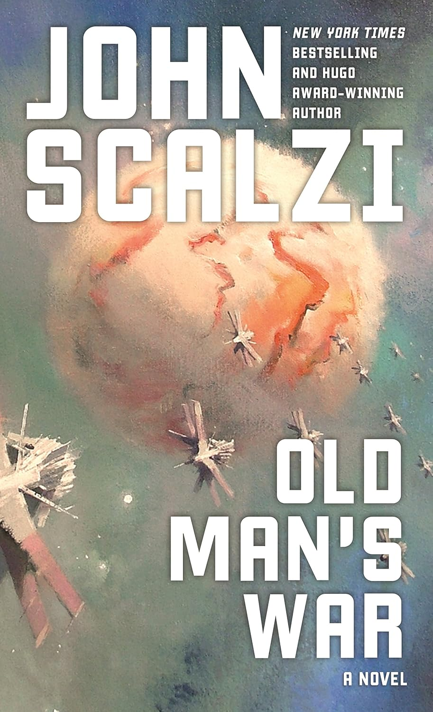

"Old Man's War"
- Read on 2025-09-03
- Rating: ️️️️️
- Format: 🎧 (9 hours 55 minutes)
I love the introduction to new science fiction books. They're clever, imaginative, and help introduce new concepts I haven't thought of before. This book was no exception to that. In short: once you turn 75, you're eligible to enlist in "Colonial Defense Force" (see: Space Army). Events unfold. The book ends.
I was less enthralled by the second half of the book. I still enjoyed it, and would be willing to go further into the series. The amount of foul language was unnecessary - I know they're in the army, but I'm not. I felt like the book was too short, and it seemed to simply stop (to allow for sequels), instead of filling in gaps and sharing more story for a slightly longer novel. Not that I'm opposed to sequels.
But if you're a sucker for science fiction, this should be right up your alley.
- Prior: Harry Potter and the Sorcerer's Stone
- Next: Congo